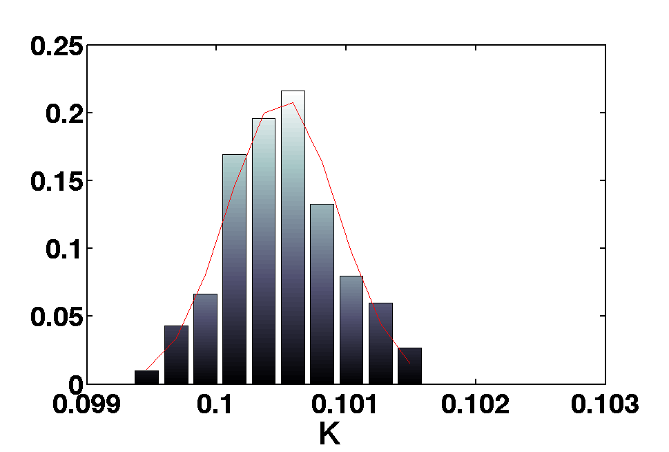
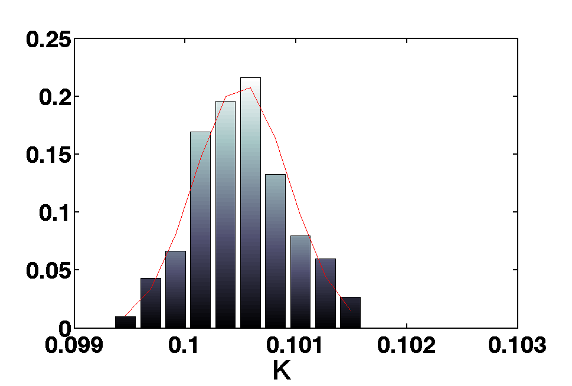

| LTPDA Toolbox™ | contents | |
In this simple experiment we use a harmonic oscillator ssm model to simulate date from an input and then we use MCMC to recover the parameters of the model.
fs = 10;
nsecs = 300;
fin = 0.2
% Create a sinusoidal input and arrange it to matrix object
in = ao(plist('waveform', 'sine wave', 'fs', fs, 'nsecs', nsecs, 'f', fin);
min = matrix(in,plist('shape',[1 1]));
% we do the same for the noise.
ns = ao(plist('waveform', 'noise', 'sigma', 0.1, 'nsecs', nsecs, 'fs', fs));
mnoise = matrix(ns,plist('shape',[1 1]))
% declare some variables here
damp = 0.1;
k = 0.1;
values = [k , damp];
% define inNames and outNames for ssm model. Also declare parameters to be fitted.
inNames = {'COMMAND.force'};
outNames = {'HARMONIC_OSC_1D.position'};
params = {'DAMP','K'};
% The model to simulate the inputs specified above.
mod = ssm(plist('built-in','HARMONIC_OSC_1D',...
'Version','Fitting',...
'Continuous',1,...
'SYMBOLIC PARAMS',params));
% Set the parameters k and damp to the ssm model.
mod.setParameters(plist('names',params,'values',values));
% Modify time step and make the model numerical.
mod.modifyTimeStep('newtimestep', 0.1);
% Generate covariance
mod.generateCovariance;
% Simulate the output after defining the plist.
pl = plist('Nsamples', fs*nsecs, ...
'aos variable names',{'COMMAND.force' 'NOISE.readout'},...
'aos', [in ns],...
'return outputs', outNames,...
'cpsd variable names', cov.find('names'), ...
'cpsd', cov.find('cov'), ...
'displayTime', true);
out = mod.simulate(pl);
model = ssm(plist('built-in','HARMONIC_OSC_1D',...
'Version','Fitting',...
'Continuous',1,...
'SYMBOLIC PARAMS',params));
% if we type model in the terminal we will see
% all the information available for the model we just created
M: running display
------ ssm/1 -------
amats: { [2 x2 ] } [1x1]
bmats: { [2 x1 ] [] } [1x2]
cmats: { [1 x2 ] } [1x1]
dmats: { [0] [1] } [1x2]
timestep: 0
inputs: [1x2 ssmblock]
1 : COMMAND | force [kg m s^(-2)]
2 : NOISE | readout [m]
states: [1x1 ssmblock]
1 : HARMONIC_OSC_1D | x [m], xdot [m s^(-1)]
outputs: [1x1 ssmblock]
1 : HARMONIC_OSC_1D | position [m]
numparams: (M=1)
params: (K=1, DAMP=1)
Ninputs: 2
inputsizes: [1 1]
Noutputs: 1
outputsizes: 1
Nstates: 1
statesizes: 2
Nnumparams: 1
Nparams: 2
isnumerical: false
hist: ssm.hist
procinfo: []
plotinfo: []
name: HARMONIC_OSC_1D
description: Harmonic oscillator
mdlfile:
UUID: b94172bc-9851-42cd-b56a-ca05503165ad
--------------------
ranges = [1e-8 1e-8 ;
0.5 0.5];
pl = plist('FitParams',params,...
'paramsValues',values,...
'inNames',inNames,...
'ngrid',20,...
'stepRanges',ranges,...
'outNames',outNames,...
'noise',mnoise,...
'f1',1e-4,...
'f2',1,...
'model',mod,...
'Navs',5,...
'pinv',false);
mcrb = crb(min,pl);
% First define some variables.
c = 1;
ranges = {[-3 3] [-3 3]};
h = 3;
Tc = [20 80];
numsampl = 200;
% Then we create the plist for the mcmc.
pl = plist('N',numsampl,...
'J',1,...
'cov',c*mcrb.y,...
'range',ranges,...
'Fitparams',params,...
'input',min,...
'noise',mnoise,...
'model',model,...
'inNames',inNames,...
'outNames',outNames,...
'frequencies',[1e-4 0.5],...
'fsout',0.2,...
'Navs',5,...
'search',true,...
'Tc',Tc,'heat',h,...
'jumps',[2e0 1e1 5e2 1e3],...
'x0',values,...
'simplex',false);
[b smplr]= mcmc(out,pl);
There is also the possibility to use a desired proposal distribution. The user may choose to draw samples from a distribution that is well fitted to the current investigation. An example is shown below:
% Suppose that we want to investigate the same problem as above.
% The plist now should include some extra parameters:
% First of all the function that draws the samples from the
% desired distribution. It must be based on the covariance matrix and
% the current position of the chain mu. For example:
propsamp = @(mu,cov) drawSamplesFromMySampler(arg1,arg2,...,mu,cov);
% Secondly, if the proposal PDF is not symmetric, we should add a function
% that calculates the probability density on the new point x.
% If left empty, then symmetricity is assumed
propdpf = @(x,mu,cov) calcDensityFromMyPDF(x,mu,cov,arg1,arg2,...,argN);
pl = plist('N',numsampl,...
'J',1,...
'cov',c*mcrb.y,...
'range',ranges,...
'Fitparams',params,...
'input',min,...
'noise',mnoise,...
'model',model,...
'inNames',inNames,...
'outNames',outNames,...
'proposal sampler',propsamp,...
'proposal pdf',propdpf,...
'frequencies',[1e-4 0.5],...
'fsout',0.2,...
'Navs',5,...
'search',true,...
'Tc',Tc,'heat',h,...
'jumps',[2e0 1e1 5e2 1e3],...
'x0',values,...
'simplex',false);
 
| |
Markov Chain Monte Carlo | Linear Parameter Estimation with Singular Value Decomposition | |
©LTP Team